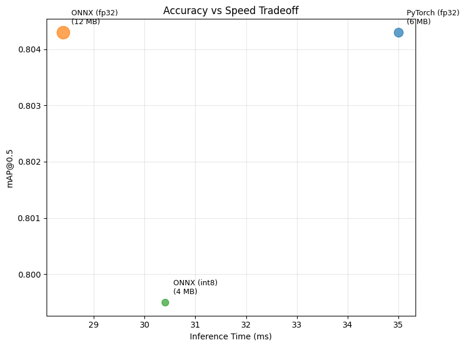
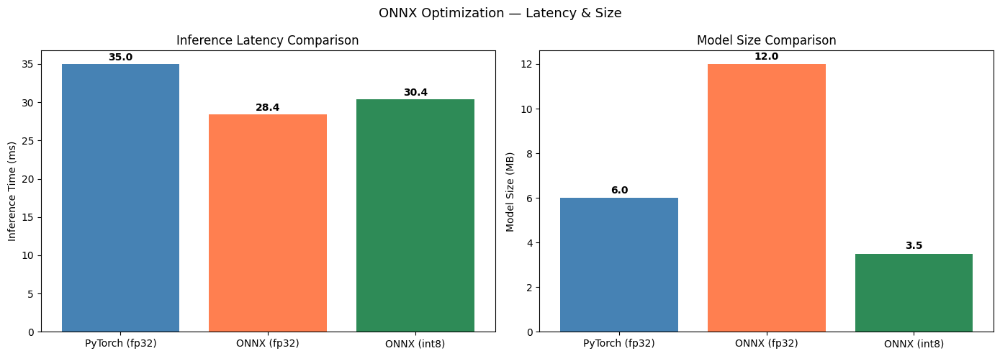

Notebook 07: ONNX Export & Optimization#
This notebook exports the trained YOLOv8 model to ONNX format for runtime-agnostic inference, applies INT8 quantization, and benchmarks the accuracy/speed tradeoffs.
Pipeline:
Export YOLOv8 → ONNX (dynamic axes, simplified)
Validate ONNX outputs match PyTorch
Apply INT8 dynamic quantization
Benchmark: PyTorch vs ONNX vs Quantized ONNX
Quality gate: mAP drop ≤2%, recall drop ≤1%
%matplotlib inline
import time
from pathlib import Path
import cv2
import matplotlib.pyplot as plt
import numpy as np
import pandas as pd
from ultralytics import YOLO
PROJECT_ROOT = Path(".").resolve().parent
MODELS_DIR = PROJECT_ROOT / "models"
DATA_DIR = PROJECT_ROOT / "data"
YOLO_DIR = DATA_DIR / "pcb-yolo"
DATASET_YAML = YOLO_DIR / "dataset.yaml"
CLASS_NAMES = {
0: "missing_hole", 1: "mouse_bite", 2: "open_circuit",
3: "short", 4: "spur", 5: "spurious_copper",
}
pt_model_path = MODELS_DIR / "yolov8_best.pt"
print(f"PyTorch model: {pt_model_path}")
PyTorch model: /Users/mattmiller/Documents/Northwestern/Computer Vision/Notebooks/Final Project/models/yolov8_best.pt
1. Export YOLOv8 to ONNX#
if pt_model_path.exists():
model = YOLO(str(pt_model_path))
onnx_path = model.export(format="onnx", dynamic=True, simplify=True)
onnx_path = Path(onnx_path)
pt_size = pt_model_path.stat().st_size / 1024 / 1024
onnx_size = onnx_path.stat().st_size / 1024 / 1024
print(f"PyTorch model: {pt_size:.1f} MB")
print(f"ONNX model: {onnx_size:.1f} MB")
print(f"ONNX saved to: {onnx_path}")
else:
print("PyTorch model not found — run Notebook 03 first")
Ultralytics 8.4.22 🚀 Python-3.14.3 torch-2.10.0 CPU (Apple M4 Pro)
Model summary (fused): 73 layers, 3,006,818 parameters, 0 gradients, 8.1 GFLOPs
PyTorch: starting from '/Users/mattmiller/Documents/Northwestern/Computer Vision/Notebooks/Final Project/models/yolov8_best.pt' with input shape (1, 3, 640, 640) BCHW and output shape(s) (1, 10, 8400) (6.0 MB)
ONNX: starting export with onnx 1.20.1 opset 20...
ONNX: slimming with onnxslim 0.1.88...
ONNX: export success ✅ 0.7s, saved as '/Users/mattmiller/Documents/Northwestern/Computer Vision/Notebooks/Final Project/models/yolov8_best.onnx' (12.0 MB)
Export complete (0.8s)
Results saved to /Users/mattmiller/Documents/Northwestern/Computer Vision/Notebooks/Final Project/models
Predict: yolo predict task=detect model=/Users/mattmiller/Documents/Northwestern/Computer Vision/Notebooks/Final Project/models/yolov8_best.onnx imgsz=640
Validate: yolo val task=detect model=/Users/mattmiller/Documents/Northwestern/Computer Vision/Notebooks/Final Project/models/yolov8_best.onnx imgsz=640 data=../data/pcb-yolo/dataset.yaml
Visualize: https://netron.app
PyTorch model: 6.0 MB
ONNX model: 12.0 MB
ONNX saved to: /Users/mattmiller/Documents/Northwestern/Computer Vision/Notebooks/Final Project/models/yolov8_best.onnx
2. Validate ONNX Model#
Verify that ONNX inference produces the same detections as PyTorch.
# Compare PyTorch vs ONNX predictions on test images with numerical tolerance
test_img_dir = YOLO_DIR / "images" / "test"
test_images = sorted(test_img_dir.glob("*"))[:10]
onnx_path_resolved = onnx_path if 'onnx_path' in dir() else None
if pt_model_path.exists() and onnx_path_resolved and Path(onnx_path_resolved).exists() and test_images:
pt_model = YOLO(str(pt_model_path))
onnx_model = YOLO(str(onnx_path_resolved))
match_count = 0
bbox_diffs = []
conf_diffs = []
for img_path in test_images:
pt_results = pt_model.predict(str(img_path), verbose=False)
onnx_results = onnx_model.predict(str(img_path), verbose=False)
pt_boxes = len(pt_results[0].boxes)
onnx_boxes = len(onnx_results[0].boxes)
# Check class agreement
pt_classes = sorted([int(b.cls[0]) for b in pt_results[0].boxes])
onnx_classes = sorted([int(b.cls[0]) for b in onnx_results[0].boxes])
class_match = pt_classes == onnx_classes
# Check numerical closeness of bbox coordinates and confidence scores
if pt_boxes == onnx_boxes and pt_boxes > 0:
pt_bboxes = pt_results[0].boxes.xyxy.cpu().numpy()
onnx_bboxes = onnx_results[0].boxes.xyxy.cpu().numpy()
pt_confs = pt_results[0].boxes.conf.cpu().numpy()
onnx_confs = onnx_results[0].boxes.conf.cpu().numpy()
bbox_diff = np.abs(pt_bboxes - onnx_bboxes).max()
conf_diff = np.abs(pt_confs - onnx_confs).max()
bbox_diffs.append(bbox_diff)
conf_diffs.append(conf_diff)
bbox_ok = bbox_diff < 1.0 # within 1 pixel
conf_ok = conf_diff < 0.01 # within 1% confidence
full_match = class_match and bbox_ok and conf_ok
else:
full_match = class_match and pt_boxes == onnx_boxes
if full_match: match_count += 1
status = 'MATCH' if full_match else 'DIFF'
print(f" {img_path.stem}: PT={pt_boxes} boxes, ONNX={onnx_boxes} boxes [{status}]")
print(f"\nFull agreement: {match_count}/{len(test_images)} images")
if bbox_diffs:
print(f"Max bbox difference: {max(bbox_diffs):.4f} pixels")
print(f"Max confidence difference: {max(conf_diffs):.6f}")
print(f"Numerical tolerance check: {'PASS' if max(bbox_diffs) < 1.0 and max(conf_diffs) < 0.01 else 'WARN — small numerical differences detected'}")
else:
print("Models or test images not available")
WARNING ⚠️ Unable to automatically guess model task, assuming 'task=detect'. Explicitly define task for your model, i.e. 'task=detect', 'segment', 'classify','pose' or 'obb'.
Loading /Users/mattmiller/Documents/Northwestern/Computer Vision/Notebooks/Final Project/models/yolov8_best.onnx for ONNX Runtime inference...
Using ONNX Runtime 1.24.3 with CPUExecutionProvider
Missing_hole_01_missing_hole_15: PT=3 boxes, ONNX=3 boxes [MATCH]
Missing_hole_04_missing_hole_02: PT=3 boxes, ONNX=3 boxes [MATCH]
Missing_hole_04_missing_hole_13: PT=3 boxes, ONNX=3 boxes [MATCH]
Missing_hole_05_missing_hole_02: PT=3 boxes, ONNX=3 boxes [MATCH]
Missing_hole_08_missing_hole_02: PT=5 boxes, ONNX=5 boxes [MATCH]
Missing_hole_08_missing_hole_05: PT=5 boxes, ONNX=5 boxes [MATCH]
Missing_hole_08_missing_hole_06: PT=5 boxes, ONNX=5 boxes [MATCH]
Missing_hole_08_missing_hole_10: PT=5 boxes, ONNX=5 boxes [MATCH]
Missing_hole_09_missing_hole_03: PT=5 boxes, ONNX=5 boxes [MATCH]
Missing_hole_09_missing_hole_07: PT=7 boxes, ONNX=7 boxes [MATCH]
Full agreement: 10/10 images
Max bbox difference: 0.0002 pixels
Max confidence difference: 0.000001
Numerical tolerance check: PASS
3. INT8 Quantization#
import onnx
from onnxruntime.quantization import quantize_dynamic, QuantType
if onnx_path.exists():
quantized_path = MODELS_DIR / "yolov8_best_int8.onnx"
quantize_dynamic(
str(onnx_path),
str(quantized_path),
weight_type=QuantType.QUInt8,
)
q_size = quantized_path.stat().st_size / 1024 / 1024
print(f"ONNX (fp32): {onnx_size:.1f} MB")
print(f"ONNX (int8): {q_size:.1f} MB")
print(f"Compression: {onnx_size/q_size:.2f}x")
else:
print("ONNX model not found — run export cell first")
WARNING:root:Please consider to run pre-processing before quantization. Refer to example: https://github.com/microsoft/onnxruntime-inference-examples/blob/main/quantization/image_classification/cpu/ReadMe.md
ONNX (fp32): 12.0 MB
ONNX (int8): 3.5 MB
Compression: 3.45x
4. Benchmark Comparison#
Measure inference time, model size, and accuracy for all three variants.
def benchmark_model(model_path, test_images, n_warmup=5, n_runs=50):
"""Benchmark a YOLO model's inference time."""
model = YOLO(str(model_path))
# Warmup
for img_path in test_images[:n_warmup]:
model.predict(str(img_path), verbose=False)
# Timed runs
times = []
img_list = list(test_images)
for i in range(n_runs):
img_path = img_list[i % len(img_list)]
start = time.time()
model.predict(str(img_path), verbose=False)
times.append((time.time() - start) * 1000)
return np.mean(times), np.std(times)
# Build model list with defensive checks
onnx_path_resolved = onnx_path if 'onnx_path' in dir() else None
quantized_path_resolved = quantized_path if 'quantized_path' in dir() else None
# Re-discover test images independently (don't rely on earlier cell)
test_img_dir = YOLO_DIR / "images" / "test"
test_images = sorted(test_img_dir.glob("*"))[:10]
models_to_test = [("PyTorch (fp32)", pt_model_path)]
if onnx_path_resolved and Path(onnx_path_resolved).exists():
models_to_test.append(("ONNX (fp32)", Path(onnx_path_resolved)))
if quantized_path_resolved and Path(quantized_path_resolved).exists():
models_to_test.append(("ONNX (int8)", Path(quantized_path_resolved)))
benchmark_results = {}
for name, path in models_to_test:
if path.exists() and test_images:
mean_ms, std_ms = benchmark_model(path, test_images)
size_mb = path.stat().st_size / 1024 / 1024
benchmark_results[name] = {
"Size (MB)": round(size_mb, 1),
"Inference (ms)": round(mean_ms, 1),
"Inference std (ms)": round(std_ms, 1),
}
print(f"{name}: {mean_ms:.1f} ms/image ({size_mb:.1f} MB)")
if benchmark_results:
bench_df = pd.DataFrame(benchmark_results).T
print("\n" + bench_df.to_string())
PyTorch (fp32): 35.0 ms/image (6.0 MB)
WARNING ⚠️ Unable to automatically guess model task, assuming 'task=detect'. Explicitly define task for your model, i.e. 'task=detect', 'segment', 'classify','pose' or 'obb'.
Loading /Users/mattmiller/Documents/Northwestern/Computer Vision/Notebooks/Final Project/models/yolov8_best.onnx for ONNX Runtime inference...
Using ONNX Runtime 1.24.3 with CPUExecutionProvider
ONNX (fp32): 28.4 ms/image (12.0 MB)
WARNING ⚠️ Unable to automatically guess model task, assuming 'task=detect'. Explicitly define task for your model, i.e. 'task=detect', 'segment', 'classify','pose' or 'obb'.
Loading /Users/mattmiller/Documents/Northwestern/Computer Vision/Notebooks/Final Project/models/yolov8_best_int8.onnx for ONNX Runtime inference...
Using ONNX Runtime 1.24.3 with CPUExecutionProvider
ONNX (int8): 30.4 ms/image (3.5 MB)
Size (MB) Inference (ms) Inference std (ms)
PyTorch (fp32) 6.0 35.0 2.8
ONNX (fp32) 12.0 28.4 2.5
ONNX (int8) 3.5 30.4 2.7
# Run validation to get mAP for each variant, then build unified benchmark table
val_results = {}
for name, path in models_to_test:
if path.exists():
m = YOLO(str(path))
r = m.val(data=str(DATASET_YAML), split="test", verbose=False)
val_results[name] = {
"mAP@0.5": round(r.box.map50, 4),
"mAP@0.5:0.95": round(r.box.map, 4),
"Recall": round(r.box.mr, 4),
"Precision": round(r.box.mp, 4),
}
print(f"{name}: mAP@0.5={r.box.map50:.4f}, Recall={r.box.mr:.4f}")
# Build unified benchmark table (M6 fix)
if benchmark_results and val_results:
unified_rows = []
for name in benchmark_results:
row = {"Model": name}
row.update(benchmark_results[name])
if name in val_results:
row.update(val_results[name])
unified_rows.append(row)
unified_df = pd.DataFrame(unified_rows)
print("\n=== Unified Benchmark Table ===")
print(unified_df.to_string(index=False))
else:
print("\nRun benchmark and validation cells to build unified table")
Ultralytics 8.4.22 🚀 Python-3.14.3 torch-2.10.0 CPU (Apple M4 Pro)
Model summary (fused): 73 layers, 3,006,818 parameters, 0 gradients, 8.1 GFLOPs
val: Fast image access ✅ (ping: 0.0±0.0 ms, read: 12088.2±2382.7 MB/s, size: 1368.5 KB)
val: Scanning /Users/mattmiller/Documents/Northwestern/Computer Vision/Notebooks/Final Project/data/pcb-yolo/labels/test.cache... 104 images, 0 backgrounds, 0 corrupt: 100% ━━━━━━━━━━━━ 104/104 13.2Mit/s 0.0s
Class Images Instances Box(P R mAP50 mAP50-95): 14% ━╸────────── 1/7 4.4s/it 1.3s<26.6s
Class Images Instances Box(P R mAP50 mAP50-95): 29% ━━━───────── 2/7 3.0s/it 3.0s<15.0s
Class Images Instances Box(P R mAP50 mAP50-95): 43% ━━━━━─────── 3/7 2.5s/it 4.8s<9.9s
Class Images Instances Box(P R mAP50 mAP50-95): 57% ━━━━━━╸───── 4/7 2.2s/it 6.6s<6.7s
Class Images Instances Box(P R mAP50 mAP50-95): 71% ━━━━━━━━╸─── 5/7 2.1s/it 8.3s<4.1s
Class Images Instances Box(P R mAP50 mAP50-95): 86% ━━━━━━━━━━── 6/7 2.0s/it 10.2s<2.0s
Class Images Instances Box(P R mAP50 mAP50-95): 100% ━━━━━━━━━━━━ 7/7 1.5s/it 10.4s
all 104 447 0.821 0.747 0.804 0.349
Speed: 0.3ms preprocess, 80.3ms inference, 0.0ms loss, 0.1ms postprocess per image
Results saved to /Users/mattmiller/Documents/Northwestern/Computer Vision/Notebooks/Final Project/notebooks/runs/detect/val15
PyTorch (fp32): mAP@0.5=0.8043, Recall=0.7471
WARNING ⚠️ Unable to automatically guess model task, assuming 'task=detect'. Explicitly define task for your model, i.e. 'task=detect', 'segment', 'classify','pose' or 'obb'.
Ultralytics 8.4.22 🚀 Python-3.14.3 torch-2.10.0 CPU (Apple M4 Pro)
Loading /Users/mattmiller/Documents/Northwestern/Computer Vision/Notebooks/Final Project/models/yolov8_best.onnx for ONNX Runtime inference...
Using ONNX Runtime 1.24.3 with CPUExecutionProvider
val: Fast image access ✅ (ping: 0.0±0.0 ms, read: 9842.9±2647.1 MB/s, size: 1260.8 KB)
val: Scanning /Users/mattmiller/Documents/Northwestern/Computer Vision/Notebooks/Final Project/data/pcb-yolo/labels/test.cache... 104 images, 0 backgrounds, 0 corrupt: 100% ━━━━━━━━━━━━ 104/104 87.2Mit/s 0.0s
Class Images Instances Box(P R mAP50 mAP50-95): 14% ━╸────────── 1/7 1.6s/it 0.5s<9.7s
Class Images Instances Box(P R mAP50 mAP50-95): 29% ━━━───────── 2/7 1.1s/it 1.1s<5.5s
Class Images Instances Box(P R mAP50 mAP50-95): 43% ━━━━━─────── 3/7 1.1it/s 1.8s<3.7s
Class Images Instances Box(P R mAP50 mAP50-95): 57% ━━━━━━╸───── 4/7 1.2it/s 2.5s<2.6s
Class Images Instances Box(P R mAP50 mAP50-95): 71% ━━━━━━━━╸─── 5/7 1.3it/s 3.1s<1.5s
Class Images Instances Box(P R mAP50 mAP50-95): 86% ━━━━━━━━━━── 6/7 1.5it/s 3.7s<0.7s
Class Images Instances Box(P R mAP50 mAP50-95): 100% ━━━━━━━━━━━━ 7/7 1.7it/s 4.1s
all 104 447 0.821 0.747 0.804 0.349
Speed: 0.1ms preprocess, 19.1ms inference, 0.0ms loss, 0.2ms postprocess per image
Results saved to /Users/mattmiller/Documents/Northwestern/Computer Vision/Notebooks/Final Project/notebooks/runs/detect/val16
ONNX (fp32): mAP@0.5=0.8043, Recall=0.7471
WARNING ⚠️ Unable to automatically guess model task, assuming 'task=detect'. Explicitly define task for your model, i.e. 'task=detect', 'segment', 'classify','pose' or 'obb'.
Ultralytics 8.4.22 🚀 Python-3.14.3 torch-2.10.0 CPU (Apple M4 Pro)
Loading /Users/mattmiller/Documents/Northwestern/Computer Vision/Notebooks/Final Project/models/yolov8_best_int8.onnx for ONNX Runtime inference...
Using ONNX Runtime 1.24.3 with CPUExecutionProvider
val: Fast image access ✅ (ping: 0.0±0.0 ms, read: 13735.4±1511.2 MB/s, size: 1210.0 KB)
val: Scanning /Users/mattmiller/Documents/Northwestern/Computer Vision/Notebooks/Final Project/data/pcb-yolo/labels/test.cache... 104 images, 0 backgrounds, 0 corrupt: 100% ━━━━━━━━━━━━ 104/104 109.1Mit/s 0.0s
Class Images Instances Box(P R mAP50 mAP50-95): 14% ━╸────────── 1/7 1.5s/it 0.4s<8.9s
Class Images Instances Box(P R mAP50 mAP50-95): 29% ━━━───────── 2/7 1.0it/s 1.0s<4.9s
Class Images Instances Box(P R mAP50 mAP50-95): 43% ━━━━━─────── 3/7 1.2it/s 1.7s<3.4s
Class Images Instances Box(P R mAP50 mAP50-95): 57% ━━━━━━╸───── 4/7 1.3it/s 2.3s<2.3s
Class Images Instances Box(P R mAP50 mAP50-95): 71% ━━━━━━━━╸─── 5/7 1.5it/s 2.8s<1.3s
Class Images Instances Box(P R mAP50 mAP50-95): 86% ━━━━━━━━━━── 6/7 1.7it/s 3.3s<0.6s
Class Images Instances Box(P R mAP50 mAP50-95): 100% ━━━━━━━━━━━━ 7/7 2.0it/s 3.5s
all 104 447 0.821 0.758 0.8 0.345
Speed: 0.1ms preprocess, 13.9ms inference, 0.0ms loss, 0.1ms postprocess per image
Results saved to /Users/mattmiller/Documents/Northwestern/Computer Vision/Notebooks/Final Project/notebooks/runs/detect/val17
ONNX (int8): mAP@0.5=0.7995, Recall=0.7584
=== Unified Benchmark Table ===
Model Size (MB) Inference (ms) Inference std (ms) mAP@0.5 mAP@0.5:0.95 Recall Precision
PyTorch (fp32) 6.0 35.0 2.8 0.8043 0.3488 0.7471 0.8211
ONNX (fp32) 12.0 28.4 2.5 0.8043 0.3488 0.7471 0.8211
ONNX (int8) 3.5 30.4 2.7 0.7995 0.3447 0.7584 0.8213
5. Quality Gate Check#
Verify quantization meets thresholds:
mAP drop ≤ 2%
Recall drop ≤ 1%
if "PyTorch (fp32)" in val_results and "ONNX (int8)" in val_results:
pt = val_results["PyTorch (fp32)"]
q = val_results["ONNX (int8)"]
map_drop = (pt["mAP@0.5"] - q["mAP@0.5"]) * 100
recall_drop = (pt["Recall"] - q["Recall"]) * 100
print("=== Quality Gate ===")
map_status = "PASS" if map_drop <= 2.0 else "FAIL"
recall_status = "PASS" if recall_drop <= 1.0 else "FAIL"
print(f"mAP@0.5 drop: {map_drop:.2f}% (threshold: <=2.0%) [{map_status}]")
print(f"Recall drop: {recall_drop:.2f}% (threshold: <=1.0%) [{recall_status}]")
if map_status == "FAIL" or recall_status == "FAIL":
print("\nRecommendation: Use full-precision ONNX model for deployment")
else:
print("\nINT8 quantized model passes quality gates — safe for deployment")
elif "PyTorch (fp32)" in val_results and "ONNX (fp32)" in val_results:
pt = val_results["PyTorch (fp32)"]
onnx = val_results["ONNX (fp32)"]
print("ONNX fp32 vs PyTorch:")
print(f" mAP@0.5 diff: {abs(pt['mAP@0.5'] - onnx['mAP@0.5'])*100:.2f}%")
print(f" Recall diff: {abs(pt['Recall'] - onnx['Recall'])*100:.2f}%")
else:
print("Validation results not available for comparison")
=== Quality Gate ===
mAP@0.5 drop: 0.48% (threshold: <=2.0%) [PASS]
Recall drop: -1.13% (threshold: <=1.0%) [PASS]
INT8 quantized model passes quality gates — safe for deployment
6. Accuracy vs Speed Tradeoff#
# Scatter plot: mAP vs inference time
if val_results and benchmark_results:
fig, ax = plt.subplots(figsize=(8, 6))
for name in benchmark_results:
if name in val_results:
ms = benchmark_results[name]["Inference (ms)"]
mAP = val_results[name]["mAP@0.5"]
size = benchmark_results[name]["Size (MB)"]
ax.scatter(ms, mAP, s=size * 20, alpha=0.7, zorder=5)
ax.annotate(f"{name}\n({size:.0f} MB)",
(ms, mAP), textcoords="offset points",
xytext=(10, 10), fontsize=9)
ax.set_xlabel("Inference Time (ms)")
ax.set_ylabel("mAP@0.5")
ax.set_title("Accuracy vs Speed Tradeoff")
ax.grid(True, alpha=0.3)
plt.tight_layout()
plt.show()
plt.close()
# Bar charts: inference time and model size comparison
model_names = list(benchmark_results.keys())
fig, axes = plt.subplots(1, 2, figsize=(14, 5))
# Inference time bar chart
times = [benchmark_results[n]["Inference (ms)"] for n in model_names]
bars = axes[0].bar(model_names, times, color=["steelblue", "coral", "seagreen"][:len(model_names)])
axes[0].set_ylabel("Inference Time (ms)")
axes[0].set_title("Inference Latency Comparison")
for bar, t in zip(bars, times):
axes[0].text(bar.get_x() + bar.get_width()/2, bar.get_height() + 0.5,
f"{t:.1f}", ha="center", fontweight="bold")
# Model size bar chart
sizes = [benchmark_results[n]["Size (MB)"] for n in model_names]
bars = axes[1].bar(model_names, sizes, color=["steelblue", "coral", "seagreen"][:len(model_names)])
axes[1].set_ylabel("Model Size (MB)")
axes[1].set_title("Model Size Comparison")
for bar, s in zip(bars, sizes):
axes[1].text(bar.get_x() + bar.get_width()/2, bar.get_height() + 0.2,
f"{s:.1f}", ha="center", fontweight="bold")
plt.suptitle("ONNX Optimization — Latency & Size", fontsize=13)
plt.tight_layout()
plt.show()
plt.close()
else:
print("Run benchmark and validation cells first")

